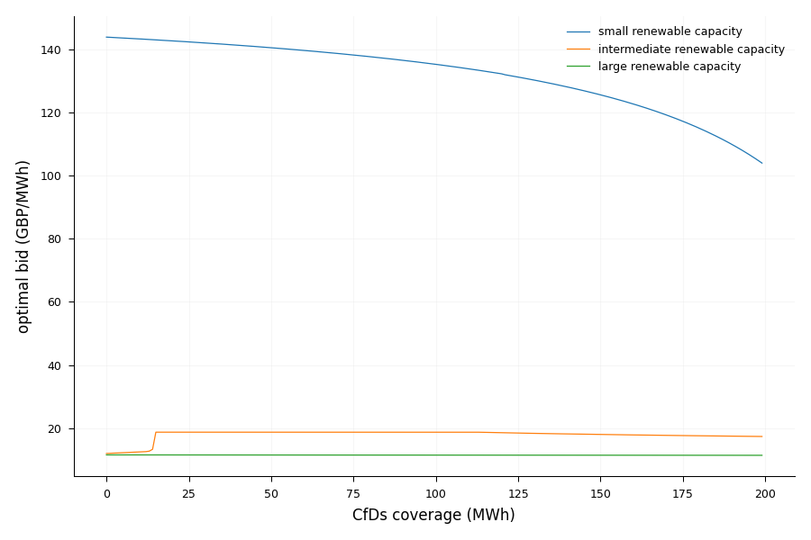
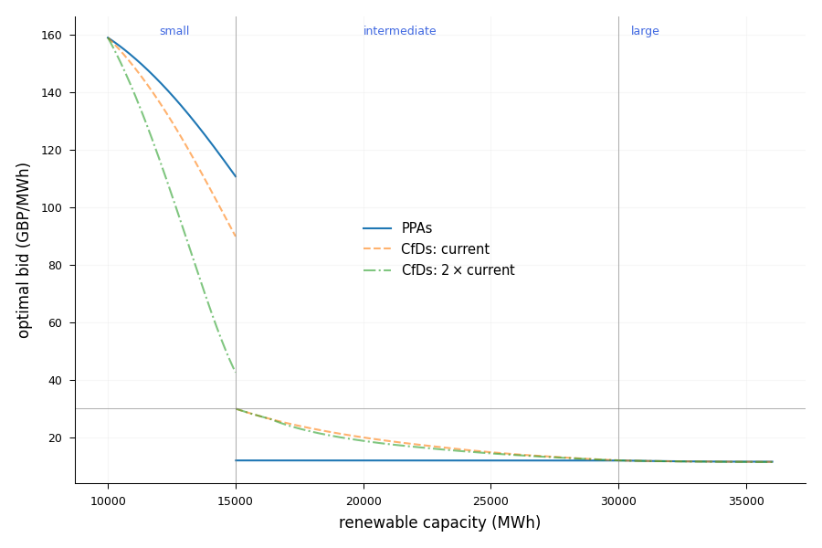
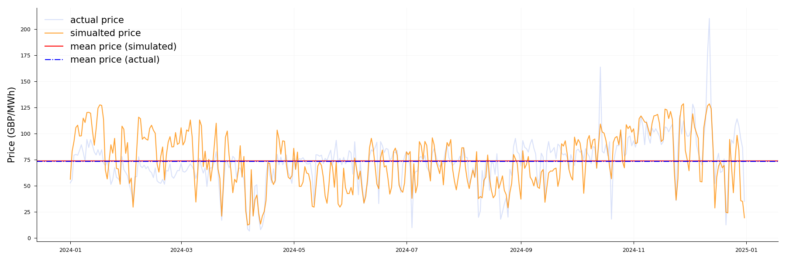
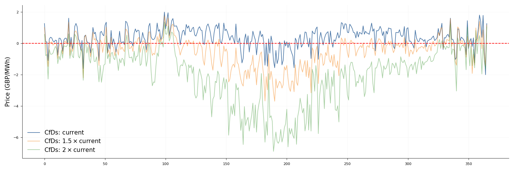
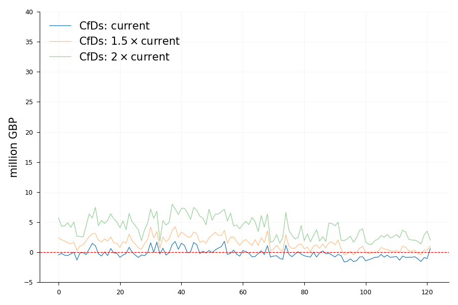
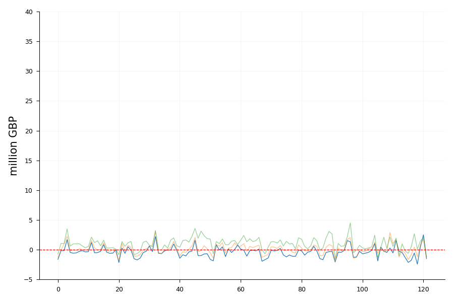
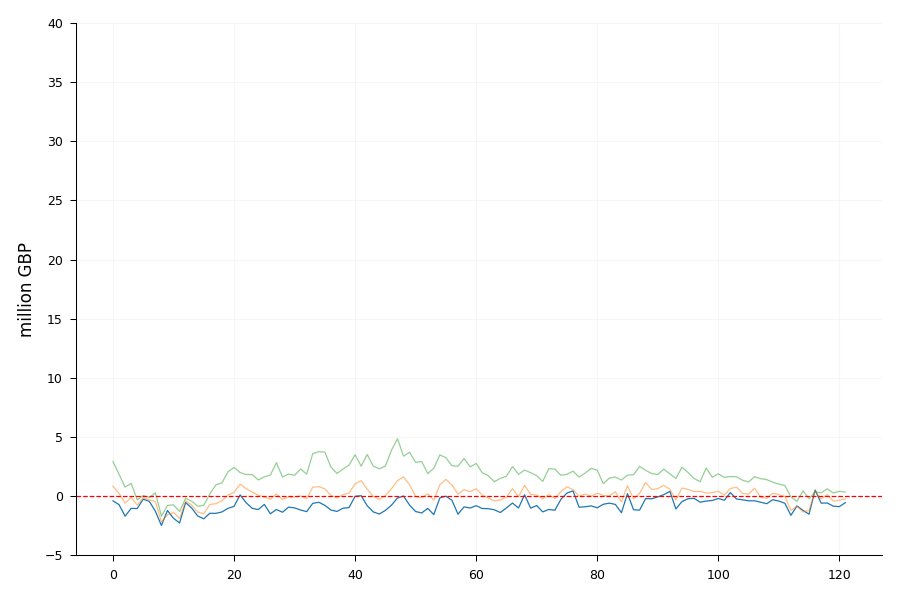

Master's Thesis · Economics · 2026
This study examines how forward contract quantity/coverage — through Corporate Power Purchase Aggrements (PPAs) and Contracts for Difference (CfDs) — shapes strategic bidding behaviour and spot prices, using UK day-ahead market data.
01 — Motivation & Research Question
Forward contracts like CfDs & PPAs are widely adopted to foster renewable energy investment. However, they may exert indirect influence on market equilibrium, and different specific characterization of contract can affect differently.
Thus to analyze the effect of CfDs and PPAs, I compare them through the common wholesale market.
Research Question
How does forward coverage f affect spot price through firms’ bidding strategy? Whether one contract type outperforms another?
02 — Theoretical Finding I
Bid is certainly decreasing in f for small and large realized renewable capacity. However, the relationship is ambiguous for intermediate renewable capacity.
FIG 1 — Equilibrium bid b(f) by renewable level r

Bid b(f) for r₁, r₂, r₃
03 — Theoretical Finding II
No-arbitrage is a natural condition under PPAs (due to private bilateral negotiation involved) while typically does not occur under CfDs by design. Under this condition, spot bidding is independent of PPAs while remaines affected by CfDs coverage.
The figure shows current CfDs coverage yields lower bid than PPAs, when RE capacity is small. Bid is higher under CfDs when RE capacity is intermediate.
FIG 2 — Bid b(r) by contract type

PPAs (solid) · CfDs(current): 4401 MWh · CfDs(2 x current): 8802 MWh
04 — Calibration · Simulation vs Observed
Mean fit
Horizontal mean lines show simulated and observed annual mean prices are close — the calibration reproduces central tendency well.
Trend fit
Seasonal price trends align with observed.
Higher variation
Simulated prices exhibit greater hourly variance — appendix analysis shows elevated model sensitivity to r relative to actual bidding.
FIG 3 — Spot price: observed vs simulated

05 — Calibration · CfD Scenario Comparison
Switch figure
Interpretation
Non-generation based CfDs may cause price to increase compared to PPAs, as the effect from being "overhedged" outweighs price-suppresing effect. However, raising CfDs coverage from current level will shift the price down.
FIG 4a — Price change when participating into CfDs (vs PPAs)

06 — Calibration · Seasonality
☀ Summer

❄ Winter

◑ Shoulder

CS / PS change vs PPA baseline at f, 1.5f, 2f · filtered by season column
06 / 06